Initially the stack is empty.
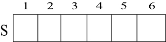
Here, top[s]=0.
Push (S,4):
Add value 4 into the stack
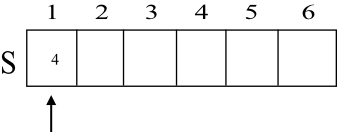
Here, top[s]=1.
Push (S,1):
Add value 1 into the stack
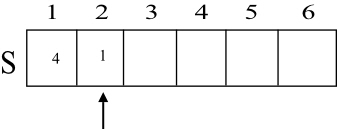
Here, top[s]=2.
Push (S,3):
Add value 3 into the stack
Here, top[s]=3.
POP (S):
Retrieve an S item from the stack
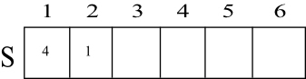
Therefore, the S value is removed now the top[s]=2.
Push (S,8):
Add value 8 into the stack
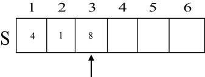
Here, top[s]=3.
POP (S):
Retrieve an S item from the stack
Therefore, the S value is removed now the top[s]=2.

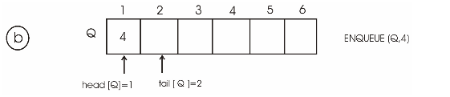
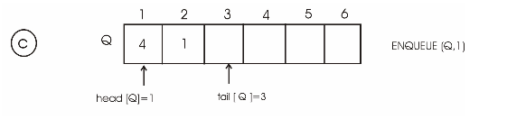
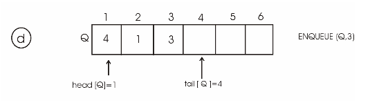
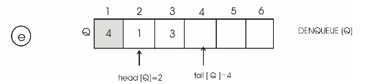
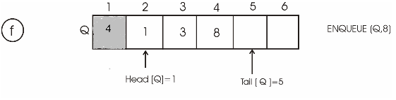
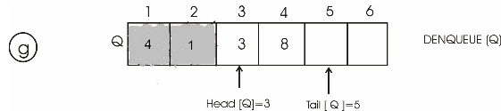
Overflow of Queue:
• Initially, tail and head of queue are initialized to 1.
• Limited number of elements (length of queue) can be inserted into queue.
• Elements are inserted (or enqueue) at tail.
• Each time an element is inserted, tail is incremented by 1(i.e. tail is moved to next location). When the tail is equal to length of the queue, tail is reinitialized to 1.
• If the head and tail+1 are equal or the head is 1 and tail is equal to length of the queue, the queue is empty. This is called queue underflow. That is, no more elements can be inserted into queue.
The modified ENQUEUE with the pseudocode identifies the overflow of queue is as follows:
ENQUEUE(Q, x)
1 if Q.head = = Q.tail+1 or ( Q.head = = 1 and Q.tail = = Q.length)
2 error “Queue Overflows”
3 else
4 Q[Q.tail] = x
5 if Q.tail = = Q.length
6 Q.tail=1
7 else Q.tail = Q.tail+1
Underflow of Queue:
• Initially, tail and head of queue are initialized to 1.
• Elements are removed from head.
• Each time an element is removed (or dequeue), head is incremented by 1.
• When head is equal to length of the queue, head is reinitialized to 1.
• If the head and tail are equal, the queue is said to be underflow (i.e. the queue is empty). That is, there is no element to remove in the queue.
The modified DEQUEUE with the pseudocode that identifies the underflow of queue is as follows:
DEQUEUE(Q)
1 if Q.head = = Q.tail
2 error “Queue underflows”
3 else
4 x = Q[Q.head]
5 if Q.head = = Q.length
6 Q.head = 1
7 else Q.head = Q.head + 1
8 return x
Double-ended QUEUE:
A double ended queue allows insertion and deletion of elements from front end and back end.
The procedure DEQUEUE-INSERT-FRONT checks whether the deque is full or not. If the deque is not full and head is greater than 0, then the procedure inserts at head and moves the head to previous position.
DEQUEUE- INSERT - FRONT(Q , x)
1. if Q.head = = 1 and Q.tail = = Q.length
2. error “ Deque is overflow “
3. if Q.head ≤ 1
4. error “ cann’t insert element at front end”
5. else Q.head = Q.head -1
6. Q[Q.head ] = x
The procedure DEQUEUE-INSERT-BACK checks whether the deque is full or not. If the deque is not full and head is not equal to tail, then the procedure inserts at tail and advances the tail to next position.
DEQUEUE- INSERT- BACK (Q , x)
1. if Q.head = = 1 and Q.tail = = Q.length
2. error “ Deque is overflow “
3. If Q.tail = = Q.length
4. error “ cann’t insert element at back end ”
5. else Q.tail = Q.tail + 1
6. Q[Q.tail] = x
7. if Q.head = = 0 and Q.tail = = 0
8. Q.head = 1
9. Q.tail = 1
The procedure DEQUEUE-DELETE-FRONT checks whether the deque is empty or not. If the deque is not empty, then the procedure removes an element at head and advances the head to next positon.
DEQUEUE –DELETE – FRONT (A)
1. if Q.head = = 0 and Q.tail = = 0
2. error “ Deque is underflow “
3. x = Q [Q.head ]
4. Q.head = Q.head + 1
5. if Q.head = = Q.tail
6. Q.head = 0
7. Q.tail = 0
The procedure DEQUEUE-DELETE-FRONT checks whether the deque is empty or not. If the deque is not empty, then the procedure removes an element at tail and advances the tail to previous positon.
DEQUEUE- DELETE –BACK(A)
1. if Q.head = = 0 and Q.tail = = 0
2. error “ Deque underflow “
3. x = Q [Q.tail ]
4. Q.tail = Q.tail – 1
5. if Q.head = = Q.tail
6. Q.head = 0
7. Q.tail = 0
Implementing Queue using Two Stacks
Consider S1 and S2 to be two stacks of size ‘n’. Also, assume Q is a queue and S1=Q.
PUSH and POP are the stack operations.
ENQUEUE and DEQUEUE are the queue operations.
ENQUEUE operation:
ENQUEUE(S1, x)
PUSH(S1, x)
Implementation for ENQUEUE:
void ENQUEUE(stack S1,int x)
{
push(S1,x);
}
The above ENQUEUE operation takes element x as an argument and pushes it into first stack.
Analysis of running time:
• The PUSH operation on stack takes  time.
time.
Therefore ENQUEUE also takes
time.
DEQUEUE operation:
DEQUEUE( )
1 if STACK-EMPTY(S1)
2 error “ Queue underflows”
3 else
4 while STACK-EMPTY(S1) ≠ TRUE
5 do y  POP(S1)
POP(S1)
6 PUSH(S2, y)
7 z = POP(S2)
8 while STACK-EMPTY(S2) ≠ TRUE
9 y
POP(S2)
10 PUSH(S1, y)
11 return z
Implementation for DEQUEUE:
int DEQUEUE()
{
int z;
if(empty(S1))
{
cout<<" Queue is underflow ";
return ;
}
else
{
while(!empty(S1))
{
int y=pop(S1);
push(S2,y);
}
z=pop(S2); // removing first element
while(!empty(S2))
{
int y=pop(S2);
push(S1,y);
}
}
return z;
}
• The above DEQUEUE operation moves all elements of the first stack S1 to the second stack S2.
• It pops the top element in the second stack S2, if S2 is not empty. Otherwise it returns an exception “Queue underflows”.
• The remaining elements in the stack S2 are again moved to first stack S1.
Analysis of running time:
• The POP operation on stack takes O(1) time.
• The PUSH operation on stack takes O(1) time.
• If the Queue is empty, DEQUEUE operations takes in O(1) time.
• If the Queue has n elements, each while loop runs almost ‘n’ times. Thus, the two while loops runs in n+n = 2n steps.
Therefore this operation takes O(n) time.